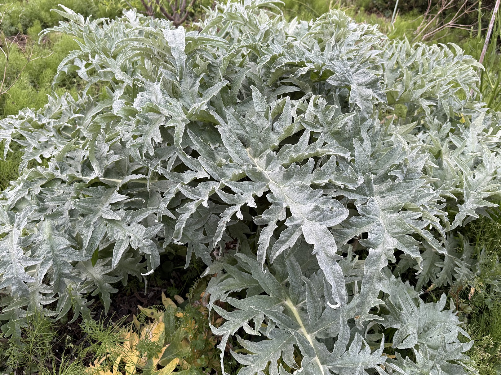
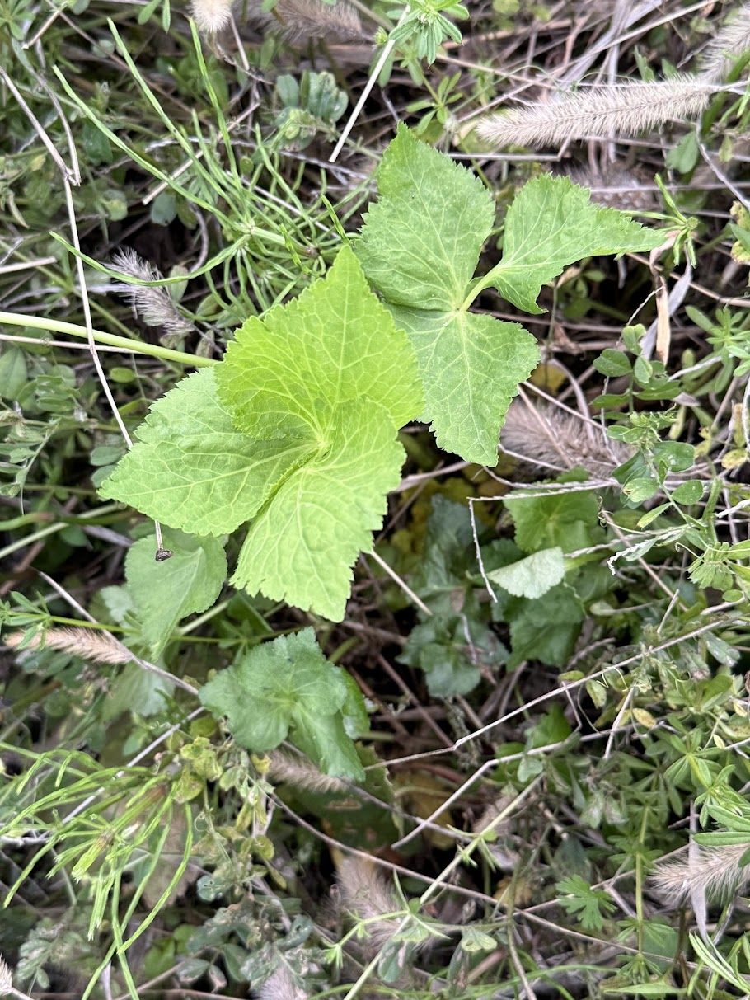

Blog
停戦しても壊れた工場から肥料は出てこない。化学肥料なしで食を支える知恵が、生存の条件になる
4月7日、米国とイランの間で2週間の停戦が合意された。ホルムズ海峡はイラン軍の管理下で通航が再開される見通しとなり、市場は安堵の反応を示した。
しかし、海峡が開いても、壊れた工場から肥料は出てこない。
世界の農業を支える肥料は、三つの原料に依存している。窒素肥料の原料となるアンモニア、リン酸肥料の製造に不可欠な硫黄、そしてカリウム肥料の原料である塩化カリウム。
このうちアンモニアと硫黄は、石油や天然ガスの精製プロセスから副産物として生まれる。アンモニアは天然ガスの水蒸気改質で合成され、硫黄は原油や天然ガスの脱硫プロセスで回収される。
製油所やガスプラントが止まれば、肥料の原料も止まる。これが「副産物の罠」である。ペルシャ湾岸は世界の尿素海上輸出の46%、アンモニア輸出の29%、硫黄輸出の約50%を担ってきた。
39日間の戦争で、ペルシャ湾岸の石油化学施設は大きな被害を受けた。
イスラエル空軍は3月18日および4月上旬、イランのブーシェフル州アサルーイェに位置するSouth Pars石油化学コンプレックスを精密爆撃した。第4精製所がほぼ完全に破壊され、第7精製所も深刻な被害を受けた。イスラエル国防省は、この攻撃でイランの石油化学製品輸出能力の85%が機能停止に追い込まれたとしている。
イラン側の報復攻撃は、カタールのラスラファン工業地帯を直撃した。世界最大のLNG輸出拠点である同施設の2基のLNG生産トレインが被弾し、カタールのLNG輸出能力の約17%（年間約1280万トン相当）が失われた。
なぜ復旧に3〜5年かかるのか。LNG施設の心臓部である大型ガスタービンを製造できるメーカーは世界に3社しかない。エネルギー調査会社Rystad Energyによれば、これらのメーカーはAIデータセンターの電力需要増大などにより、開戦前からすでに2〜4年分の受注残を抱えていた。代替部品の納入は物理的に順番待ちであり、完全復旧には最短でも3〜5年を要する。この問題については別稿「ガスタービンは食糧とAI、どちらに使うべきか」で詳述する。
三つの肥料——窒素（尿素）、リン酸（DAP、MAP）、カリウム——は、それぞれ原料の調達構造が異なり、回復のタイムラインも異なる。
尿素はアンモニアから合成され、アンモニアは天然ガスから生産される。ペルシャ湾岸は世界の尿素海上輸出の46%を占めてきた。カタールのQAFCO、サウジアラビアのSABIC Agri-Nutrientsは、原料供給の途絶を受けフォース・マジュール（不可抗力）を宣言して生産を停止している。エジプトの尿素プラントもイスラエルからのガス供給途絶により停止した。
天然ガスプラント自体が直接爆撃で全壊したケースと、周辺インフラの損傷により稼働できないケースがある。後者であれば段階的に再稼働する可能性がある。ユーラシア・グループの分析では、損傷した施設の修理と生産水準の回復には「数カ月」を要するとされる。
代替供給源として期待される中国は、自国の食糧安全保障を優先し2026年8月まで尿素輸出を実質停止している。マレーシア・ペトロナス社のビントゥル尿素プラント（年間70万トン規模）も4月に計画外の停止に陥った。
回復見通し： 部分的な供給再開は2026年後半。戦前水準への回復は2027年以降。
リン酸肥料は、リン鉱石を硫酸で溶解して製造する。硫酸の原料は硫黄であり、硫黄は石油精製の過程で「出てくる」副産物である。製油所が再建されなければ硫黄は生まれない。
世界最大のリン酸肥料輸出企業であるモロッコのOCPグループは、年間約370万〜650万トンの硫黄を輸入し、その52%を中東から調達していた。硫黄の枯渇により、2026年第2四半期の生産能力を最大30%削減した。
OCPは緊急策として加工済みの硫酸をヨーロッパや中国から直接輸入しているが、中国自身も硫黄輸入の約半分を中東に依存しており、自国の硫酸輸出を半減させている。緊急調達は硫酸市場をパニックに陥れ、中国の硫酸FOB価格がマイナス12.50ドルから35ドルに急騰した。
回復見通し： 硫黄の供給は製油所の再建（3〜5年）に依存するため、本格的な回復は2028年以降。
主要生産国はカナダ、ロシア、ベラルーシであり、ペルシャ湾への依存度は低い。供給量は比較的安定だが、輸送コスト全般の高騰（海上保険料、燃料費）により価格は上昇基調にある。
| 肥料の種類 | 主な制約要因 | 部分的回復 | 戦前水準への回復 |
|---|---|---|---|
| 窒素（尿素） | ガスプラントの損傷、中国の輸出停止 | 2026年後半 | 2027年以降 |
| リン酸（DAP、MAP） | 硫黄の供給途絶（製油所の破壊） | 2027年（高コスト） | 2028年以降 |
| カリウム | 輸送コストの上昇 | 比較的安定 | 価格は高止まり |
最も回復が遅いのはリン酸肥料である。硫黄という「副産物」に依存する構造が、回復の最大のボトルネックとなっている。
窒素肥料もリン酸肥料も、供給回復は月単位ではなく年単位の問題である。
世界の穀物生産は化学肥料の投入を前提として設計されている。肥料なしではトウモロコシの収量は30〜50%低下し、小麦や米も同様の影響を受ける。
米国農務省（USDA）の2026年作付け意向調査によれば、農家は窒素肥料を大量に必要とするトウモロコシの作付面積を前年比3%（345万エーカー）減少させ、空気中の窒素を自ら固定できる大豆の面積を前年比4%（349万エーカー）増加させる意向を示している。中東危機の勃発後、米国ニューオーリンズの尿素価格はわずか数週間で1トンあたり475ドルから680ドルへと約50%急騰した。
トウモロコシは米国の畜産業を支える飼料の基盤である。作付け減少と単収の低下が重なれば、2026年秋以降の飼料価格が急騰し、食肉価格に転嫁される。飼料代を賄えなくなった畜産農家が家畜を早期に淘汰すれば、2027年以降は深刻な食肉不足を招く。
北半球の2026年春の作付けには間に合わない。2027年も大きくは改善しない。世界の食糧価格は、2026年後半から2027年にかけて構造的な上昇局面に入る。
なお、肥料と同じ「副産物の罠」にはまっているナフサ（包装材・医療用プラスチックの原料）の問題については、別稿「ナフサ危機：食糧危機は収穫の前に流通から始まる」で詳述する。
食料供給困難事態対策法は、最終段階で「芋など高カロリー品目への生産転換」を指示できる。発動基準は国民1人1日あたり1850キロカロリー。カロリーだけで判断している。
さつま芋はカロリー生産効率が高い。しかし人間はカロリーだけでは生きられない。
さつま芋にはタンパク質がほとんどない。100gあたり約1.2g。成人の1日必要量60gを満たすには5kg食べる必要がある。必須脂肪酸、鉄分、亜鉛、ビタミンB12も不足する。数カ月続ければ、筋肉量の低下、免疫機能の低下、子どもの成長障害、貧血が広がる。カロリーは足りるが栄養失調になる。戦後日本がこの状態だった。
土壌にとっても問題がある。さつま芋は連作障害が深刻で、2年目から収量が落ちる。土壌のカリウムを大量に収奪し、収穫時に団粒構造を壊す。肥料が来ない状況で全国に一斉に植えれば、今年のカロリーを確保する代わりに、来年以降の土壌の力を消耗する。
肥料の供給が年単位で回復しないなら、農地の相当部分は化学肥料なしで作付けするしかない。これは選択ではなく、物理的な強制である。

福岡正信の自然農法は、多様な植物を同じ場所に混植する。大豆が窒素を固定し、隣の作物がそれを使う。背の高い植物が日陰を作り、地表を覆う植物が土壌の乾燥を防ぐ。
福岡が独自に育成した「ハッピーヒル」品種を用いた不耕起栽培では、1ヘクタール換算で約5.5トンの米を収穫している。化学肥料・農薬を使う慣行農業に匹敵する収量を、無肥料で達成した実績がある。

混植は人間の栄養と土壌の健康を同時に解決する。大豆はタンパク質を供給しながら土壌に窒素を返す。葉物野菜はビタミンとミネラルを供給しながら有機物を土壌に還元する。多様な根系が異なる深さの土壌を耕し、微生物の生息環境を維持する。
さつま芋の一斉転換は、カロリーという単一指標を最大化して、栄養と土壌の多様性を同時に破壊する。混植はその逆だ。単一指標を最大化しないが、人間も土壌も健全に保つ。
化学肥料が戻ってきた時も、以前より遥かに高い。通航料の恒久化、生産施設の再建コスト、世界的な需要の集中。「肥料を買う農業」は、もう安い農業ではなくなる。
日本は、この構造から抜け出せる数少ない国の一つである。水がある。土がある。微生物がいる。山林がある。そして数千年にわたる、化学肥料なしで食を支えてきた知恵がある。
福岡正信が遺した言葉がある。「自然とともにあれば、生きられる」。
これは哲学ではなくなった。生存の条件である。
参考資料： 肥料不足と食糧危機、自然農法への転換（PDF）
本記事の事実情報の収集にはGemini Deep Researchを、構造分析と執筆にはClaude（Anthropic）を使用しています。